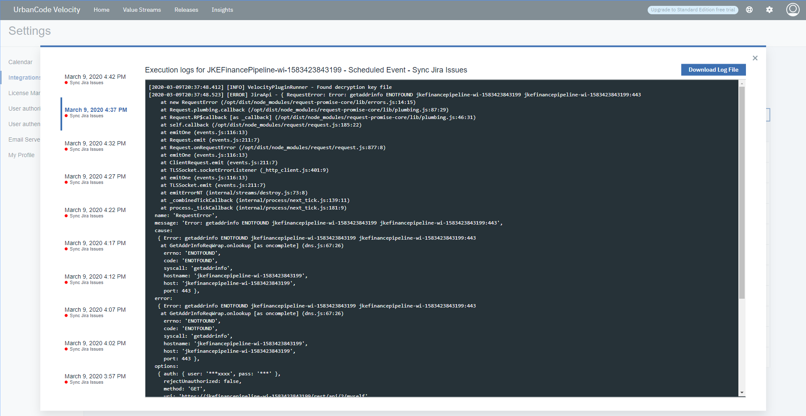

This article was originaly published in 2020.03.08
1.5.0
The following enhancements are included in each release. In addition to various bug fixes.
Key Features in 1.5.0
New Value Stream Swim Lanes view
A Value Stream Swim Lanes view is now available for all value streams. The new view reorganizes your original value steam based on assigned user. You can use this view to identify who owns certain work items and how far along these items are in the value steam. The DQL querying is available if you are looking for something specific.

New Pipeline Executor role
The new Pipeline Executor role allow teams to give developers the ability to push builds through the pipeline, but not modify them. Proper use of this role ensures good division of duties and conformity to each deployment.
Integration logs
Improvements to integration logs have been made to improve troubleshooting. Now, the last ten integration executions are saved in a log and each can be viewed. The
Logs Modal
dialog has been redesigned to better accommodate the additional information.

Insights dashboard improvements to the Deployment Count chart
Several improvements have been made to the Deployment Count chart.
-
If a links is available for a Deployment Count chart, it links to additional details.
-
The chart can be filtered by
User
.
-
The
Group By
drop down list now expands to display the selected option.
Bug Fixes
Problem: Unable to disable SMTP configuration setting
There is now a
Delete
button to remove a SMTP configuration. Prior to this fix, the SMTP configuration could not be unset or deleted.
Release Summary
-
New Value Stream Swim Lane view
-
New Pipeline Executor role
-
Various bug fixes and improvements
Release Notes
None
Getting Started
Known Problems
If you are using UrbanCode Deploy v7 and later, review APAR PI99803 related to UrbanCode Deploy integrations that create large audit database entries. This issue will be resolved in UrbanCode Deploy v7.0.5.1.
APAR PI99803
identified a significant performance issue where the UrbanCode Deploy Integration was creating a large amount of login requests when gathering deployment information. If you are using UrbanCode Deploy v7.0.0.0 or greater, contact the L2 support team to obtain a performance related patch.
Plan & Prepare
For supported platforms and requirements you can dynamically generate a system requirements report using the
Software Product Compatibility Reports (SPCR)
tool.
Install the server
There are two option to obtaining the installation package: online installer and offline installer. Both options will require a master license key, which can be acquired from:
Online installer
The online installer option for installing the product requires an internet connection for the entire process. It requires minimum storage for the downloaded package. The downloaded image contains only the Helm charts used to pull the product Docker images from a GitHub location. This is our recommended installation method.
Download the online installer package depending on the platform, the product is being installed.
After the download completes, start the executable file to begin the install process.
Offline installer
The offline installer process allows for installation of product without an internet connection. You'll need a connection only to download the product image. All containers needed to successfully install the product are included. For this reason, the images requires more space when downloading.
The installation package is available from
IBM FixCentral
. Search and select the installation package appropriate for the installation platform.
After downloading the installation package, decompress the contents into two directories, one for Kubernetes and the other for Docker Compose. The instructions for installing the server are located in the product documentation, see the
Installation
topic.
To obtain the product license key you must agree to the terms and condition statements provided on Passport Advantage. The license key is required to start the install process for the initial and future installations.
Learn
To learn more about IBM UrbanCode Velcoity, see the
documentation
.
For help installing or using IBM UrbanCode Velocity, post your questions in the
UrbanCode forums
. Tag your question with
velocity
.
To suggest an enhancement to the product, visit the
RFE Community
Get support
For information from support, including FAQs, visit the
IBM Support portal.
You can configure the support portal to view information about specific products.